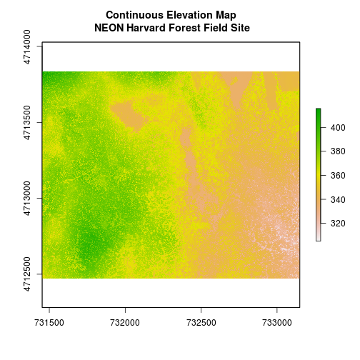
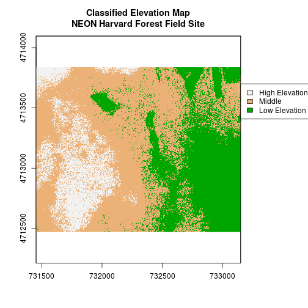
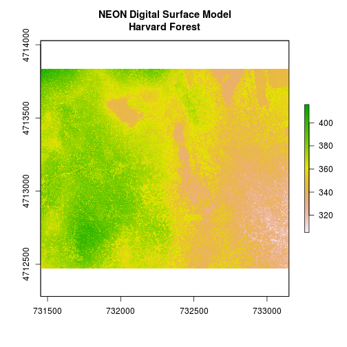
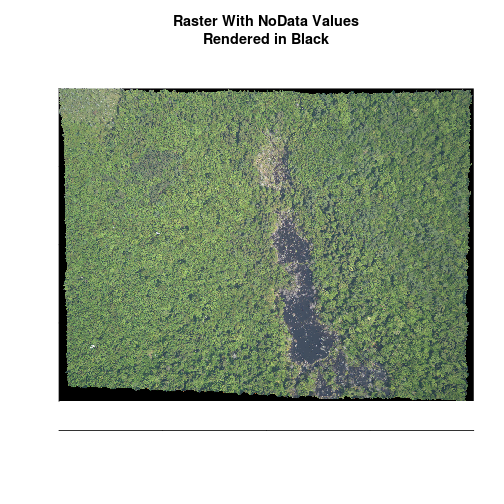
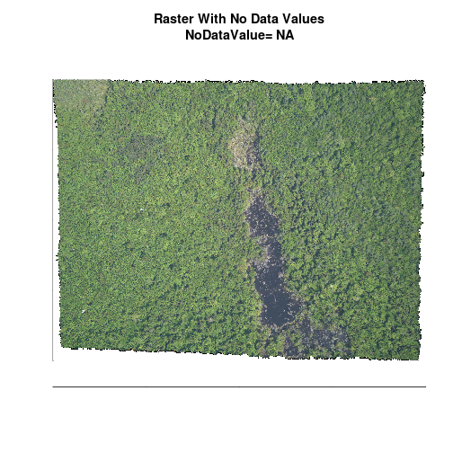
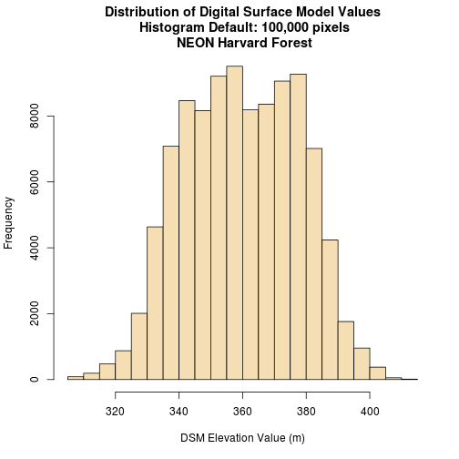
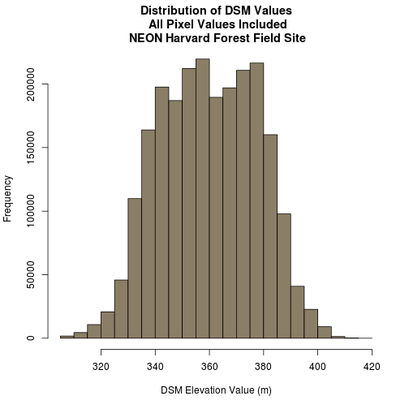

Intro to Raster Data in R
Authors
Leah A. Wasser, Megan A. Jones, Zack Brym, Kristina Riemer, Jason Williams, Jeff Hollister, Mike Smorul, Joseph Stachelek
Overview
Teaching: 10 min
Exercises: 0 minQuestions
What is a raster dataset?
Objectives
Understand what a raster dataset is and its fundamental attributes.
Know how to explore raster attributes in
R.Be able to import rasters into
Rusing therasterpackage.Be able to quickly plot a raster file in
R.Understand the difference between single- and multi-band rasters.
Things You’ll Need To Complete This Tutorial
R Skill Level: Intermediate - you’ve got the basics of
Rdown.You will need the most current version of
Rand, preferably,RStudioloaded on your computer to complete this tutorial.Install R Packages
- raster:
install.packages("raster")rgdal:
install.packages("rgdal")- More on Packages in R - Adapted from Software Carpentry.
Download Data
Reference
In this tutorial, we will review the fundamental principles, packages and
metadata/raster attributes that are needed to work with raster data in R.
We discuss the three core metadata elements that we need to understand to work
with rasters in R: CRS, extent and resolution. It also explores
missing and bad data values as stored in a raster and how R handles these
elements. Finally, it introduces the GeoTiff file format.
About Raster Data
Raster or “gridded” data are stored as a grid of values which are rendered on a map as pixels. Each pixel value represents an area on the Earth’s surface.

Types of Data Stored in Raster Format
Raster data can be continuous or categorical. Continuous rasters can have a range of quantitative values. Some examples of continuous rasters include:
- Precipitation maps.
- Maps of tree height derived from LiDAR data.
- Elevation values for a region.
A map of elevation for Harvard Forest derived from the NEON AOP LiDAR sensor is below. Elevation is represented as continuous numeric variable in this map. The legend shows the continuous range of values in the data from around 300 to 420 meters.
Loading required package: sp
rgdal: version: 1.2-18, (SVN revision 718)
Geospatial Data Abstraction Library extensions to R successfully loaded
Loaded GDAL runtime: GDAL 2.2.2, released 2017/09/15
Path to GDAL shared files: /usr/share/gdal/2.2
GDAL binary built with GEOS: TRUE
Loaded PROJ.4 runtime: Rel. 4.8.0, 6 March 2012, [PJ_VERSION: 480]
Path to PROJ.4 shared files: (autodetected)
Linking to sp version: 1.2-7

Some rasters contain categorical data where each pixel represents a discrete class such as a landcover type (e.g., “forest” or “grassland”) rather than a continuous value such as elevation or temperature. Some examples of classified maps include:
- Landcover / land-use maps.
- Tree height maps classified as short, medium, tall trees.
- Elevation maps classified as low, medium and high elevation.
Categorical Landcover Map for the United States

Categorical Elevation Map of the NEON Harvard Forest Site
The legend of this map shows the colors representing each discrete class.

What is a GeoTIFF??
Raster data can come in many different formats. In this tutorial, we will use the
geotiff format which has the extension .tif. A .tif file stores metadata
or attributes about the file as embedded tif tags. For instance, your camera
might
store a tag that describes the make and model of the camera or the date the
photo was taken when it saves a .tif. A GeoTIFF is a standard .tif image
format with additional spatial (georeferencing) information embedded in the file
as tags. These tags can include the following raster metadata:
- A Coordinate Reference System (
CRS) - Spatial Extent (
extent) - Values that represent missing data (
NoDataValue) - The
resolutionof the data
In this tutorial we will discuss all of these metadata tags.
More about the .tif format:
Raster Data in R
Let’s first import a raster dataset into R and explore its metadata.
To open rasters in R, we will use the raster and rgdal packages.
# load libraries
library(raster)
library(rgdal)
# set working directory to ensure R can find the file we wish to import
# setwd("working-dir-path-here")
Open a Raster in R
We can use the raster("path-to-raster-here") function to open a raster in R.
Data Tip
OBJECT NAMES! To improve code readability, file and object names should be used that make it clear what is in the file. The data for this tutorial were collected over from Harvard Forest so we’ll use a naming convention of
datatype_HARV.
# Load raster into R
DSM_HARV <- raster("data/NEON-DS-Airborne-Remote-Sensing/HARV/DSM/HARV_dsmCrop.tif")
# View raster structure
DSM_HARV
class : RasterLayer
dimensions : 1367, 1697, 2319799 (nrow, ncol, ncell)
resolution : 1, 1 (x, y)
extent : 731453, 733150, 4712471, 4713838 (xmin, xmax, ymin, ymax)
coord. ref. : +proj=utm +zone=18 +datum=WGS84 +units=m +no_defs +ellps=WGS84 +towgs84=0,0,0
data source : /home/travis/build/datacarpentry/r-raster-vector-geospatial/_episodes_rmd/data/NEON-DS-Airborne-Remote-Sensing/HARV/DSM/HARV_dsmCrop.tif
names : HARV_dsmCrop
values : 305.07, 416.07 (min, max)
# plot raster
# note \n in the title forces a line break in the title
plot(DSM_HARV,
main = "NEON Digital Surface Model\nHarvard Forest")

Here is a map showing the elevation of our site in Harvard Forest. Is the max elevation value within this raster greater than 400 meters or 400 feet? Perhaps we need to learn more about the data attributes from the metadata!
Coordinate Reference System
The Coordinate Reference System or CRS tells R where the raster is located
in geographic space. It also tells R what method should be used to “flatten”
or project the raster in geographic space.

What Makes Spatial Data Line Up On A Map?
There are lots of great resources that describe coordinate reference systems and
projections in greater detail (read more, below). For the purposes of this
activity, what is important to understand is that data from the same location
but saved in different projections will not line up in any GIS or other
program. Thus, it’s important when working with spatial data in a program like
R to identify the coordinate reference system applied to the data and retain
it throughout data processing and analysis.
Read More:
- A comprehensive online library of CRS information.
- QGIS Documentation - CRS Overview.
- Choosing the Right Map Projection.
- NCEAS Overview of CRS in R.
How Map Projections Can Fool the Eye
Check out this short video highlighting how map projections can make continents seems proportionally larger or smaller than they actually are!
View Raster Coordinate Reference System (CRS) in R
We can view the CRS string associated with our R object using thecrs()
method. We can assign this string to an R object, too.
# view resolution units
crs(DSM_HARV)
CRS arguments:
+proj=utm +zone=18 +datum=WGS84 +units=m +no_defs +ellps=WGS84
+towgs84=0,0,0
# assign crs to an object (class) to use for reprojection and other tasks
myCRS <- crs(DSM_HARV)
myCRS
CRS arguments:
+proj=utm +zone=18 +datum=WGS84 +units=m +no_defs +ellps=WGS84
+towgs84=0,0,0
The CRS of our DSM_HARV object tells us that our data are in the universal transverse mercator (UTM) projection.

The CRS in this case is in a PROJ 4 format. This means that the projection
information is strung together as a series of text elements, each of which
begins with a + sign.
+proj=utm +zone=18 +datum=WGS84 +units=m +no_defs +ellps=WGS84 +towgs84=0,0,0
We’ll focus on the first few components of the CRS in this tutorial.
+proj=utmThe projection of the dataset. Our data are in Universal Transverse Mercator (UTM).+zone=18The UTM projection divides up the world into zones, this element tells you which zone the data is in. Harvard Forest is in Zone 18.+datum=WGS84The datum was used to define the center point of the projection. Our raster uses theWGS84datum.+units=mThis is the horizontal units that the data are in. Our units are meters.
Extent
The spatial extent is the geographic area that the raster data covers.

The spatial extent of an R spatial object represents the geographic “edge” or
location that is the furthest north, south, east and west. In other words, extent
represents the overall geographic coverage of the spatial object.
Resolution
A raster has horizontal (x and y) resolution. This resolution represents the area on the ground that each pixel covers. The units for our data are in meters. Given our data resolution is 1 x 1, this means that each pixel represents a 1 x 1 meter area on the ground.

The best way to view resolution units is to look at the
coordinate reference system string crs(). Notice our data contains: +units=m.
crs(DSM_HARV)
CRS arguments:
+proj=utm +zone=18 +datum=WGS84 +units=m +no_defs +ellps=WGS84
+towgs84=0,0,0
Calculate Raster Min and Max Values
It is useful to know the minimum or maximum values of a raster dataset. In this case, given we are working with elevation data, these values represent the min/max elevation range at our site.
Raster statistics are often calculated and embedded in a geotiff for us.
However if they weren’t already calculated, we can calculate them using the
setMinMax() function.
# This is the code if min/max weren't calculated:
# DSM_HARV <- setMinMax(DSM_HARV)
# view the calculated min value
minValue(DSM_HARV)
[1] 305.07
# view only max value
maxValue(DSM_HARV)
[1] 416.07
We can see that the elevation at our site ranges from 305.07m to 416.07m.
NoData Values in Rasters
Raster data often has a NoDataValue associated with it. This is a value
assigned to pixels where data is missing or no data were collected.
By default the shape of a raster is always square or rectangular. So if we
have a dataset that has a shape that isn’t square or rectangular, some pixels
at the edge of the raster will have NoDataValues. This often happens when the
data were collected by an airplane which only flew over some part of a defined
region.
In the image below, the pixels that are black have NoDataValues.
The camera did not collect data in these areas.

In the next image, the black edges have been assigned NoDataValue. R doesn’t render pixels that contain a specified NoDataValue. R assigns missing data with the NoDataValue as NA.

NoData Value Standard
The assigned NoDataValue varies across disciplines; -9999 is a common value
used in both the remote sensing field and the atmospheric fields. It is also
the standard used by the
National Ecological Observatory Network (NEON).
If we are lucky, our GeoTIFF file has a tag that tells us what is the
NoDataValue. If we are less lucky, we can find that information in the
raster’s metadata. If a NoDataValue was stored in the GeoTIFF tag, when R
opens up the raster, it will assign each instance of the value to NA. Values
of NA will be ignored by R as demonstrated above.
Bad Data Values in Rasters
Bad data values are different from NoDataValues. Bad data values are values
that fall outside of the applicable range of a dataset.
Examples of Bad Data Values:
- The normalized difference vegetation index (NDVI), which is a measure of greenness, has a valid range of -1 to 1. Any value outside of that range would be considered a “bad” or miscalculated value.
- Reflectance data in an image will often range from 0-1 or 0-10,000 depending upon how the data are scaled. Thus a value greater than 1 or greater than 10,000 is likely caused by an error in either data collection or processing.
Find Bad Data Values
Sometimes a raster’s metadata will tell us the range of expected values for a raster. Values outside of this range are suspect and we need to consider than when we analyze the data. Sometimes, we need to use some common sense and scientific insight as we examine the data - just as we would for field data to identify questionable values.
Create A Histogram of Raster Values
We can explore the distribution of values contained within our raster using the
hist() function which produces a histogram. Histograms are often useful in
identifying outliers and bad data values in our raster data.
# view histogram of data
hist(DSM_HARV,
main = "Distribution of Digital Surface Model Values\n Histogram Default: 100,000 pixels\n NEON Harvard Forest",
xlab = "DSM Elevation Value (m)",
ylab = "Frequency",
col = "wheat")
Warning in .hist1(x, maxpixels = maxpixels, main = main, plot = plot, ...):
4% of the raster cells were used. 100000 values used.

Notice that an warning message is thrown when R creates the histogram.
Warning in .hist1(x, maxpixels = maxpixels, main = main, plot = plot, ...): 4%
of the raster cells were used. 100000 values used.
This warning is caused by the default maximum pixels value of 100,000 associated
with the hist function. This maximum value is to ensure processing efficiency
as our data become larger!
- More on histograms in R from R-bloggers
We can define the max pixels to ensure that all pixel values are included in the
histogram. USE THIS WITH CAUTION as forcing R to plot all pixel values
in a histogram can be problematic when dealing with very large datasets.
# View the total number of pixels (cells) in is our raster
ncell(DSM_HARV)
[1] 2319799
# create histogram that includes with all pixel values in the raster
hist(DSM_HARV,
maxpixels = ncell(DSM_HARV),
main = "Distribution of DSM Values\n All Pixel Values Included\n NEON Harvard Forest Field Site",
xlab = "DSM Elevation Value (m)",
ylab = "Frequency",
col = "wheat4")

Note that the shape of both histograms looks similar to the previous one that
was created using a representative 10,000 pixel subset of our raster data. The
distribution of elevation values for our Digital Surface Model (DSM) looks
reasonable. It is likely there are no bad data values in this particular raster.
Raster Bands
The Digital Surface Model object (DSM_HARV) that we’ve been working with
is a single band raster. This means that there is only one dataset stored in
the raster: surface elevation in meters for one time period.

A raster dataset can contain one or more bands. We can use the raster() function
to import one single band from a single OR multi-band raster. We can view the number
of bands in a raster using the nlayers() function.
# view number of bands
nlayers(DSM_HARV)
[1] 1
However, raster data can also be multi-band meaning that one raster file
contains data for more than one variable or time period for each cell. By
default the raster() function only imports the first band in a raster
regardless of whether it has one or more bands. Jump to the fourth tutorial in
this series for a tutorial on multi-band rasters:
Work with Multi-band Rasters: Images in R.
View Raster File Attributes
Remember that a GeoTIFF contains a set of embedded tags that contain
metadata about the raster. So far, we’ve explored raster metadata after
importing it in R. However, we can use the GDALinfo("path-to-raster-here")
function to view raster metadata before we open a file in R.
# view attributes before opening file
GDALinfo("data/NEON-DS-Airborne-Remote-Sensing/HARV/DSM/HARV_dsmCrop.tif")
rows 1367
columns 1697
bands 1
lower left origin.x 731453
lower left origin.y 4712471
res.x 1
res.y 1
ysign -1
oblique.x 0
oblique.y 0
driver GTiff
projection +proj=utm +zone=18 +datum=WGS84 +units=m +no_defs
file data/NEON-DS-Airborne-Remote-Sensing/HARV/DSM/HARV_dsmCrop.tif
apparent band summary:
GDType hasNoDataValue NoDataValue blockSize1 blockSize2
1 Float64 TRUE -9999 1 1697
apparent band statistics:
Bmin Bmax Bmean Bsd
1 305.07 416.07 359.8531 17.83169
Metadata:
AREA_OR_POINT=Area
Notice a few things in the output:
- A projection is described using a string in the
proj4format :+proj=utm +zone=18 +datum=WGS84 +units=m +no_defs - We can identify a
NoDataValue: -9999 - We can tell how many
bandsthe file contains: 1 - We can view the x and y
resolutionof the data: 1 - We can see the min and max values of the data:
BminandBmax.
It is ideal to use GDALinfo to explore your file before reading it into
R.
Challenge: Explore Raster Metadata
Without using the
rasterfunction to read the file intoR, determine the following about theNEON-DS-Airborne-Remote-Sensing/HARV/DSM/HARV_DSMhill.tiffile:
- Does this file has the same
CRSasDSM_HARV?- What is the
NoDataValue?- What is resolution of the raster data?
- How large would a 5x5 pixel area be on the Earth’s surface?
- Is the file a multi- or single-band raster?
Notice: this file is a
hillshade. We will learn about hillshades in Work with Multi-band Rasters: Images in R.Answers
rows 1367 columns 1697 bands 1 lower left origin.x 731453 lower left origin.y 4712471 res.x 1 res.y 1 ysign -1 oblique.x 0 oblique.y 0 driver GTiff projection +proj=utm +zone=18 +datum=WGS84 +units=m +no_defs file data/NEON-DS-Airborne-Remote-Sensing/HARV/DSM/HARV_DSMhill.tif apparent band summary: GDType hasNoDataValue NoDataValue blockSize1 blockSize2 1 Float64 TRUE -9999 1 1697 apparent band statistics: Bmin Bmax Bmean Bsd 1 -0.7136298 0.9999997 0.3125525 0.4812939 Metadata: AREA_OR_POINT=Area
- If this file has the same CRS as DSM_HARV? Yes: UTM Zone 18, WGS84, meters.
- What format
NoDataValuestake? -9999- The resolution of the raster data? 1x1
- How large a 5x5 pixel area would be? 5mx5m How? We are given resolution of 1x1 and units in meters, therefore resolution of 5x5 means 5x5m.
- Is the file a multi- or single-band raster? Single.
Key Points
The Coordinate Reference System or CRS tells R where the raster is located in geographic space and what method should be used to “flatten” or project the raster.